In this project, we create a mesh network of PIC32 microcontrollers connected using ESP8266 wifi modules. The mesh network is able to fully connect itself through a variety of graph topology algorithms and is able to route packets through the network using a shortest path approach. It also exposes a very simple application layer that can be extended to a virtually unlimited set of networked ideas.
The primary motivation for this project was to create an offline distributed communication system that was robust to connectivity changes and required no manual intervention to set up. In order to do this effectively, we needed wireless devices that could scan for other wireless devices and connect to multiple wireless devices at once. We considered several different types of wireless devices, including bluetooth modules and radios. However, the bluetooth modules weren’t really able to connect with multiple devices at once and the radios could only be set up as broadcast stations or receivers, so there would have likely been significant packet drop, as described in this project report. We settled on wifi modules, specifically the ESP8266 modules, since they met most of the requirements for this project and had a relatively long range.
The general logical structure of our design was to create layers of hardware that were each responsible for a different level of abstraction, similar to the way the OSI model is organized. This meant that once we had defined the connections/API between each of the layers in our project, we could work on each piece individually and then bring it all together in the end. Some of the main tradeoffs that we made were at the software level between well established algorithms and custom algorithms. The main tradeoff was between using the Ad-hoc On-demand Distance Vector (AODV) routing algorithm or a custom algorithm for routing messages between nodes. Some of the data points that factored into our decision were ease of implementation and relevancy to the goal of the project. We eventually decided that while a custom routing algorithm would require extra theoretical development, it would work better than AODV in terms of what we wanted out of this project.
The node consisted primarily of two key components: the PIC32 microcontroller and the ESP8266 wifi module. Given our previous experience throughout the course with the PIC32 microcontroller, the PIC32 proved to be an inexpensive, powerful chip that would allow us to meet the demands of network. For those reasons, the PIC32MX250F128B was selected to be used within our nodes. On the other hand, the ESP8266 wifi-module is a component that is known for its versatility, cost-effectiveness, and powerful capabilities. For these reasons, we also concluded that the ESP8266 would provide great functionality to the node. The nodes were designed to be as compact as possible to minimize the usage, and cost, of using a perfboard.
The PIC32 and the ESP8266 both require a 3.3 volt power supply; therefore, we used a 3.3V regulator to produce a fixed 3.3V output from the 5V power supply. As expected, the output was connected to pin 8 (VCC) on the ESP8266 wifi module and then connected to the appropriate pins on the PIC32.
One of the peripherals that was added to our nodes was an led. The led was super useful in testing our algorithms and visualizing the behavior of our system. The led would constantly blink when the node was searching for a connection, and then stay lit up when it connected to another node. Therefore, if we expected a connection to occur, or had an unexpected connection, the led would be an easy visual to identify an issue. Likewise, if the led acted accordingly to the expected behavior, it would help confirm the functionality of our node.
As shown in the schematic below, each of our nodes have four sockets: the microstick socket, the UART socket, and the wifi socket, and the PIC32 socket. Having sockets for each of our most important parts allows us to easily swap out components. It follows that having sockets allows us to replace faulty parts with ease.
Another key aspect of the hardware design was the inclusion of the wifi debug jumpers. As shown in the schematic below, pin 1 of the wifi debugger is connected to RB7 while pin 2 is connected to RA2. Since RB7 was connected to TX on the ESP8266 and RA2 is connected to RX, the inclusion of wifi jumpers led to fairly easy debugging on the wifi module.
Here is the schematic of mesh nodes:
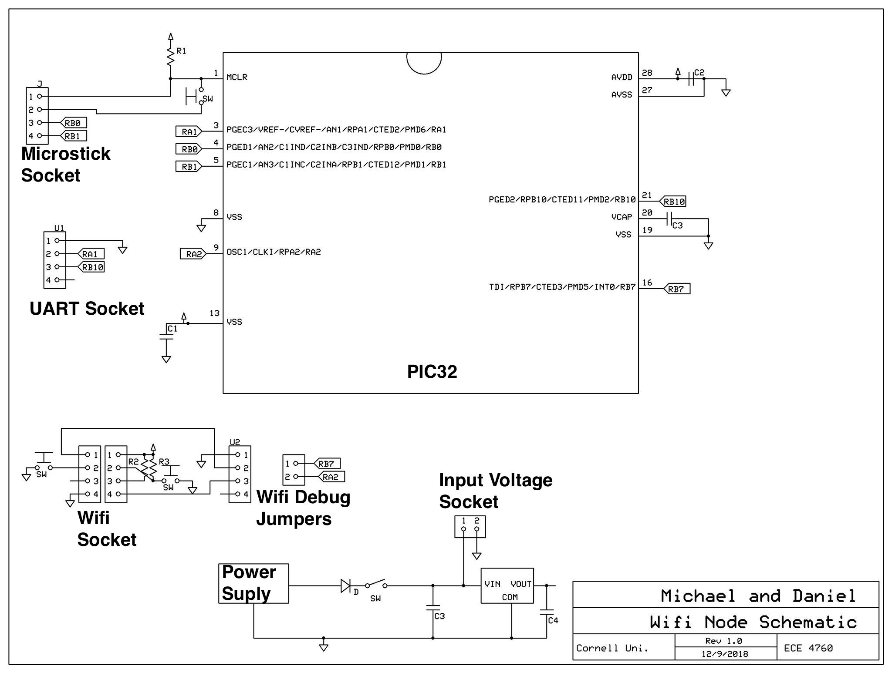Here are some images of the final boards:
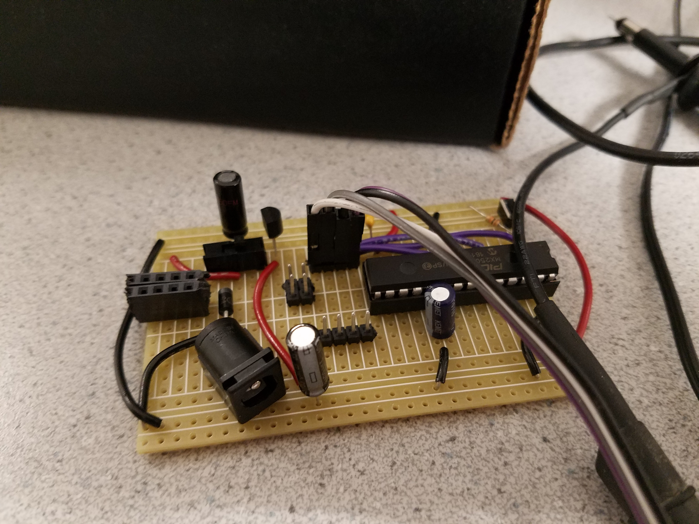 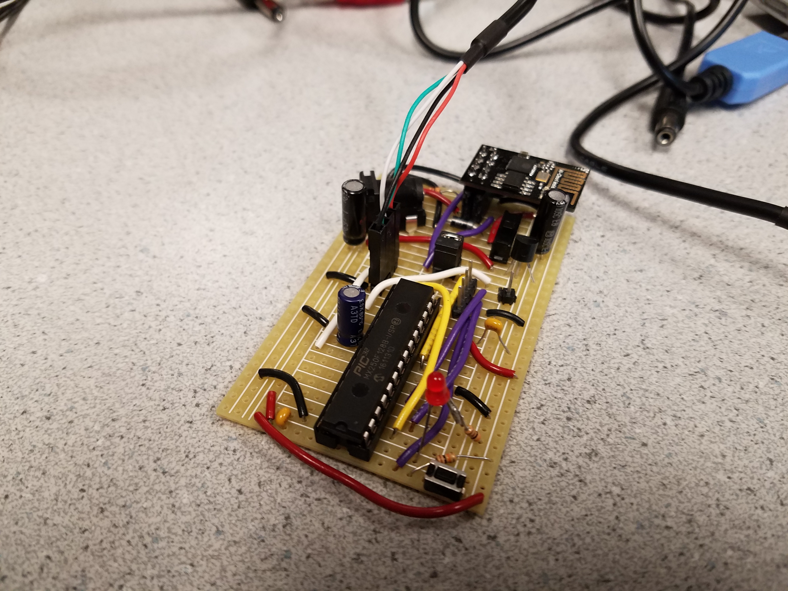 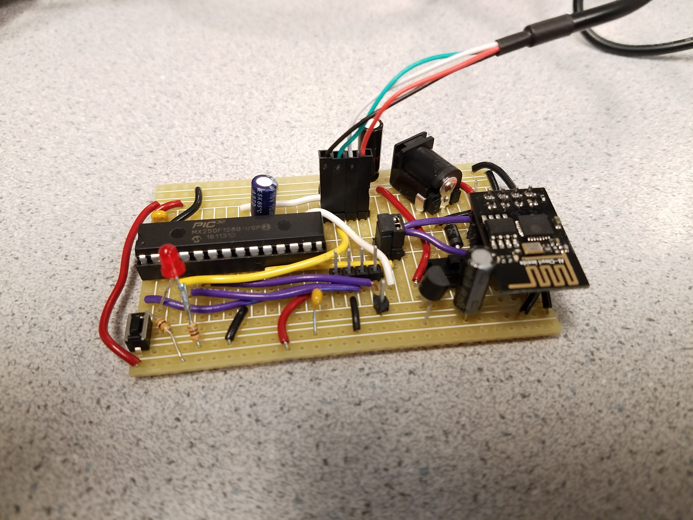 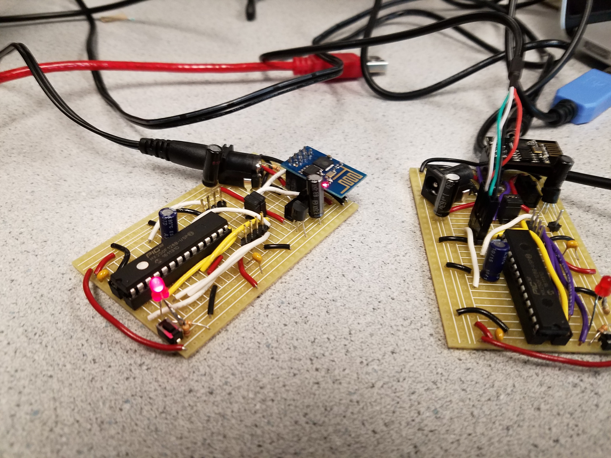In order to get the most up to date AT commands working on the ESP8266 modules, we decided to flash the latest firmware from Espressif. In order to do this, we had to add a button to reset the ESP8266 module by pulling the reset pin low and add a button to pull the GPIO_0 pin from floating to low (this circuit can be seen in the wifi socket section of the schematic). This put the module in a state to be programmed. We then used the firmware flashing feature of Espressif’s esptool python script to flash the firmware to the modules through the USB to UART cable.
The software design was largely influenced by the constraints of the hardware we were working with, namely the ESP8266 wifi modules. Wifi devices are typically either configured as stations or access points. A station is a device like your computer, which can connect to one wifi network at a time. An access point is something like a router, which allows many stations to connect to it and acts as a kind of local hub for connecting wifi devices. The ESP8266 wifi modules actually allow a third mode which is a hybrid of the two. A single chip can act as both a station and an access point. However, it limits the total number of connects to 5. 4 connections to its access point and its one station connection.
These connectivity restrictions inform the kind of mesh network we can create. Since the number of edges in the network is limited to the number of devices (since a station can only connect to a single access point) we can’t really make a very fault tolerant network. Therefore, we decided to focus on software that tries to connect as many of the devices as possible in a fully connected mesh. Although not rigorously proven, we believe that the algorithms we designed allow for the maximum number of nodes to be connected in an arbitrary mesh configuration. In order to accomplish this, we split the software into 4 logically separate layers: Wifi, Routing, Topology, and Application.
At the bottom of the stack we have the wifi layer. This layer was responsible for communicating with the ESP8266 and exposing a simplified wifi API to the software layer above. The communication with the wifi module was done over UART. Since it was very important to not lose any information from the wifi module, we used DMA to receive the data from UART into a buffer. This was done by storing a large ring buffer in memory which was written to on a UART_RX_IRQ. In order to keep track of the head of the ring buffer, we also set up an interrupt to fire on cell transfer, which simply increments a write pointer with wrap around. When we wanted to read wifi data, we busy wait until the write pointer advances past the read pointer and then update the read pointer as we read. The full code for this can be found in the uart.c file.
The wifi layer is mainly concerned with setting up the wifi module and handling connections and disconnections from stations and access points. When it sets up the wifi module, the wifi layer reads the module’s mac address and assigns itself a unique ID and IP address based on the mac address. It then sets up a TCP server at the IP address and broadcasts itself to other wifi modules by setting its name to “ESP8266-Mesh-
The layer above the wifi layer is the routing layer. This layer was concerned with maintaining a device’s current view of the network. This view took the form of a graph. We considered using the AODV algorithm to maintain routes between nodes. However, we realized that since we wanted to construct a network graph for each node that we would have a lot of unnecessary messages going through the network. Therefore, we decided that our routing algorithm would be a custom algorithm that allowed each node to construct a graph of the mesh network. This algorithm was inspired by some of the ideas that were presented in the AODV specification: specifically the idea of node sequence numbers and flood messages. The algorithm is primarily concerned with connection creation and destruction.
When station S connects to access point A, node A sends S a bootstrap packet. This bootstrap packet contains node A’s current graph. Node S will then figure out the differences between A’s graph and its own graph. It will then flood the new edges from A to its side of the network and flood the edges from S’s side of the network to A. Finally, it will flood the S-A edge to the whole network.
As a concrete example, consider the following scenario. Node T is connected to node S and node A is connected to node B. So nodes T and S see the network graph as an edge connecting each other and nodes A and B see the network graph as an edge connecting each other. Node S connects to node A, and the messages look like so:
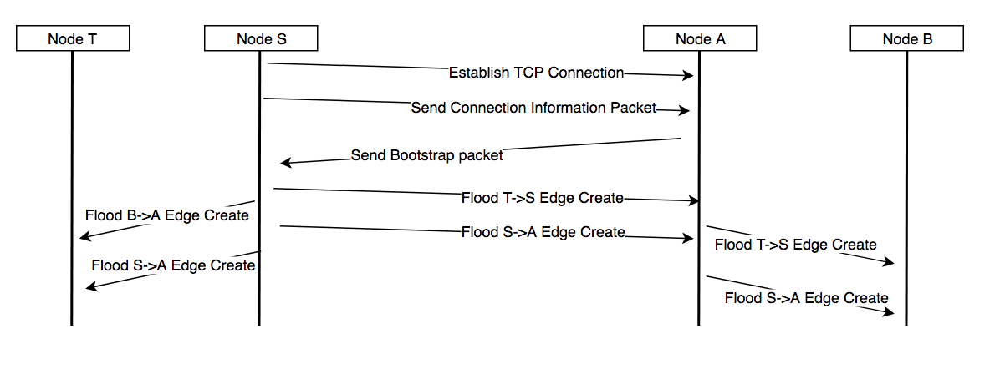After the flood of messages has subsided, all 4 nodes in the network know about all 3 edges in the fully connected network and they are all able to produce the same graph. When two nodes disconnect from each other they both flood their respective sides of the network with an edge removal message. This allows each node in the network to update its graph to reflect the removed edge.
In order to stop flood messages from infinitely propagating throughout the network we use the concept of sequence numbers. Each node maintains its own monotonically increasing sequence number, which it increases with each message that it creates. Every flood message has an origin node and the sequence number of that origin node when the flood message was created. Each node keeps track of the highest sequence number that it has seen from each node in the network. When a node sees a new message from origin node O with sequence number N, it checks to see if N is greater than the largest sequence number previously seen from O. If it is, then the node accepts the message and updates the largest sequence number to N. Otherwise, the node discards the message.
Since all of the connections between nodes are TCP connections, we guarantee in order delivery and successful transmission (unless disconnection) of all packets between nodes. Due to this property, we can make some claims about the eventual consistency of the state of each node. We can guarantee that each node will eventually see the correct view of the network, even if edges are created and destroyed elsewhere in the network. As shown in the above diagram, edge creation messages are flooded by the station. Edge deletion messages will be flooded by both endpoints. However, in order to keep the network consistent, the access point will flood the edge removal as if it is coming from the station (by setting the originating node to the station and the sequence number to the sequence number of the station node). This means that whenever the station wants to increment its sequence number, it needs to let the access point it is connected to know about the increment. Since all edge modification events appear to come from the station connection, there is never a case where a node receives an inconsistent message based on its message history. Additionally, when a station receives a bootstrap message, it broadcasts the edge creation messages as if they had come from the original stations, meaning that when two node partitions are finally connected they will receive all of the edge creation messages as if they were just sent.
The layer on top of the routing layer is the topology layer. In actuality, this layer behaves more like a companion layer to the routing layer (i.e. acts at the same level of abstraction). Its job is to organize the nodes of the network so that the network can be as connected as possible. This involves running 3 algorithms: the no cycle algorithm, the edge reversal algorithm, and the sparse connection algorithm. The no cycle algorithm ensures that there are no cycles in the network. This is because the edge reversal algorithm will require that the network graph have no cycles. The no cycle algorithm inspects a node’s current network graph and determines if there is a cycle in the graph that it is a part of. If it finds one, the node will disconnect from its access point if it is the lowest ID node in the cycle. The last condition makes it so that all the nodes in the cycle agree on which node will disconnect; otherwise every node will disconnect and the whole mesh will have to be reconstructed.
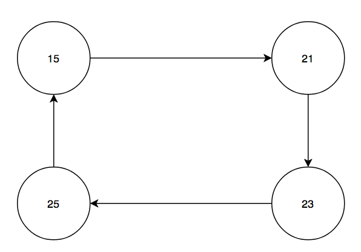Every node will see that it is in a cycle, but node 15 will disconnect from node 21 since node 15 has the smallest ID.
The edge reversal algorithm is necessary because the network could inadvertently partition itself. As a simple toy example, assume we have nodes A, B, C, and D. Nodes A and B can see each other, nodes B and C can see each other, and nodes C and D can see each other. Assume that node B connects to node A and node C connects to node D. Since each node can only have a single station connection, the network is now partitioned, as shown below:
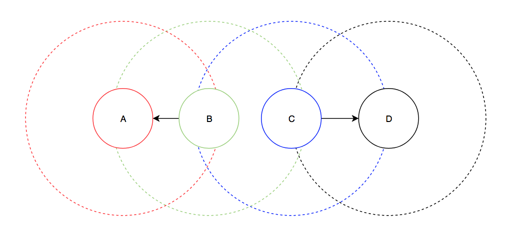Then a node N that runs the edge reversal algorithm looks for nodes which are visible to N but not in N’s graph. If such a node exists, N tries to find a reversible path in its graph, which is a path ending in a node with out degree 0. It will then tell every node along that path to disconnect from its access point and connect to the previous node in the path. After this is done, the network will still have the same connectivity and now N will have out degree 0, meaning it can connect to the node that was visible but not in the network. In the above network, let's assume that B completed the edge reversal process first. Then the resulting network will look like so:
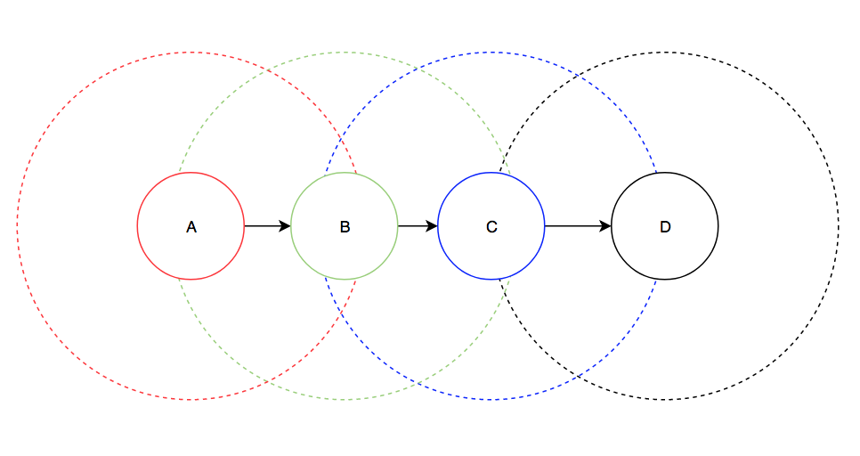Finally, the sparse connection algorithm attempts to remedy the 5 connection limit imposed on the wifi modules. As a motivating example, assume the network has the following configuration and that modules are limited to 3 connections:
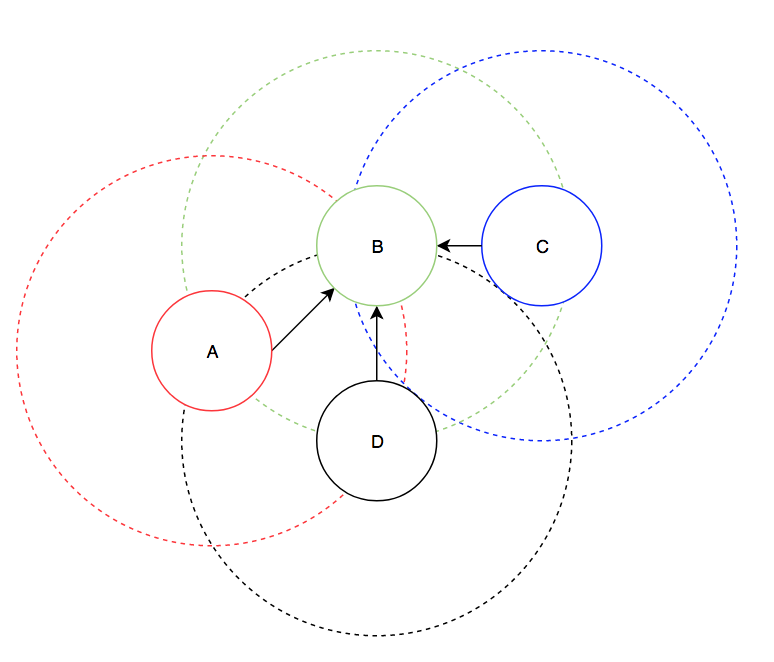Now assume a 5th node, node E comes online in the following position:
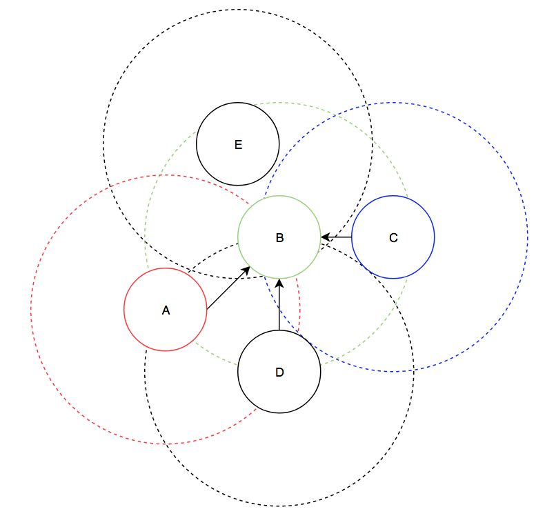Node E wants to connect to node B, but node B already has 3 connections, so it will refuse the connection. However, we can still fully connect the network if A makes a connection to D instead. The way that A does this is that it realizes that node B has a large in degree and that A sees another node that is in the network (D). A will then choose to disconnect from node B and connect to node D in order to decrease the in degree of node B. Then, node E can connect to node B and we now have a fully connected network.
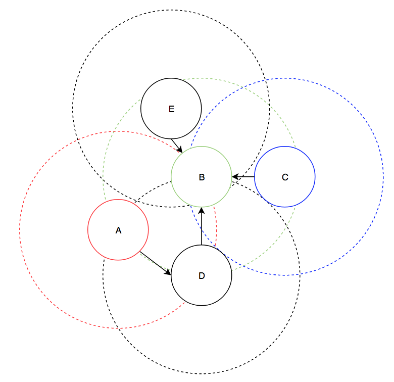Overall, the hardware performed very well. The boards that we created had no issues and reliably connected the ESP8266 modules, the PIC32, and then UART to USB cable. The main issue that we had with the software was that modules would often disconnect when more than a few modules were present in the network. This may have been due to the quick timeout time (30 seconds for the TCP connection) and the large delay that we introduced to aid debugging (5 seconds per cycle). Additionally, sometimes the wifi modules would not be able to see the other wifi modules on their scan, even when they were very close. Furthermore, sometimes the wifi modules would fail to set up immediately on power up. A hard reset of the wifi module would usually resolve these issues, but we still don’t know what the reasons were for the issues.
Another issue with the modules was that the modules often didn’t report a connection closure when we turned off a wifi module. This resulted in long periods of time where the network graph was inconsistent. It also made it very difficult to demo the “self healing” properties of our network as its behavior wasn’t as consistent as we liked. We were however able to successfully test that removing a module eventually resulted in a correct graph.
Unfortunately, the inconsistency of the modules meant the we couldn’t test some of the algorithms described in the topology on the actual hardware. We were able to simulate some of the hardware’s behaviour in a python script. This allowed us to create a simulated environment for the algorithms to work in. In this simulated environment we were able to test and verify the correctness of the topology algorithms. This simulation code can be found here
Overall, we were quite pleased with the outcome of our work. We were able to meet our initial goals and made some very interesting software along the way. The simulation system that we developed for quick mesh algorithm testing was invaluable during development of the code base and with some improvements could become a more viable method of simulating various mesh network algorithms. While the final C code base is quite good, there are some algorithmic improvements that could be made to increase the stability of the network under disconnections.
One consideration for future work on this project is that the routing algorithm likely does not scale to a large number of nodes as each node needs to know about the existence of every other node. Testing would have to be done to determine if something like AODV would be more suitable for larger mesh networks.
All of the code that was written for the final PIC32 microcontroller was built from the ground up without any external libraries. The firmware and firmware flashing tools were all obtained from Espressif, which releases all of their tools under the MIT license, which allows us to freely use their software in this project. While the final algorithms were influenced by some of the ideas in the AODV specification, the specification is freely available online and its ideas are free to use. While we didn’t do much research into wifi based mesh network algorithms, we believe that this project may contain publishable algorithms and ideas.
In regards to the IEEE Code of Ethics, we feel like this project does uphold the safety and welfare of the public and was not made with the harmful intent. This project was created to increase our technical competence in a variety of software and hardware related fields and we hope that our results can be useful to future researchers and academics exploring similar problems. We maintain that any claims made in this writeup are substantiated through physical testing of our project and simulation of our algorithms.
The ESP8266 module is fully compliant with FCC rules and regulations.
The group approves this report for inclusion on the course website.
The group approves the video for inclusion on the course youtube channel.
A fully commented listing of the code can be found on our github
Schematics can be found in the hardware section
Cost breakdown:
| Item | Cost | Quantity | Total Cost |
|---|---|---|---|
| ESP8266 | 5.35 | 3 | 16.05 |
| USB-TTL cable | 9.95 | 3 | 29.85 |
| Small board | 4 | 1 | 4 |
| White board | 6 | 1 | 6 |
| Small solder board | 1 | 2 | 2 |
| 5V power supply | 5 | 3 | 15 |
| PIC32MX250F128B | 5 | 3 | 15 |
| Total | 87.90 |
Task Breakdown:
Daniel Weber:
Mesh software and algorithms
Michael Rodriguez:
Hardware and peripherals
References:
AT command reference
Esp flashing code
Esp firmware
AODV specification
Website template
Radio Mesh Network Project